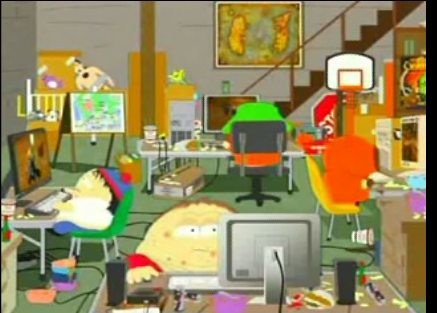
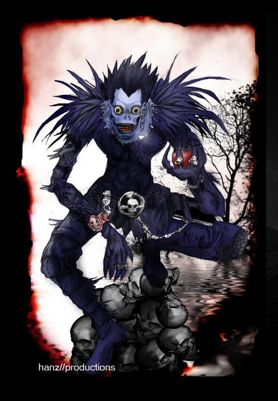

What are virtual worlds? And why do they speak so intensely to us about the present? Why are they always reinvented as new?
This course puts immensely popular online virtual worlds like World of Warcraft and video games like Grand Theft Auto into a historical, literary, and philosophical perspective. Beginning with Plato, students will work through imaginative worlds of literary history, including those of the Bible, Dante, Borges, Murakami, and others.
We will analyze the ways in which virtual worlds represent and reflect the cultures from which they emerge, their ethical stances and structures, and the alternative imaginaries they embody.
The course will also engage the extent to which technology and media are always a part of defining, ordering, and structuring worlds. Do new media create new worlds requiring new modes of interpretation?
Students will present research on their experiences of immersion in such worlds as part of the course.
COURSE OBJECTIVES
To place literature in dialogue with digital technologies.
To develop a vocabulary that enables discussion of digital technologies through literature and literature through digital technologies.
To find answers to questions of difference in kind between cultures of new media and those of old media.
To refine your understanding of the relationship between art, media, and social/cultural context.
To begin to understand some differences between the types of media available here in the US and those available elsewhere in the world.
To learn to organize thoughts and express them clearly.
To learn to think critically about media’s unique role in representation and to become a more engaged, critical spectator, reader, and interpreter of cultural products from around the world.

Hello Virtual Worlders
CMLIT 013
Virtual Worlds: Antiquity to the Present
575443001
T R 02:30P - 03:45P
211 HHD EAST
Professor:
Jonathan E. Abel
Office Hours:
Tuesdays and Thursday 10-12
or by appointment
Office:
441 Burrowes Building
Tel: 814 865 2263


Virtual Syllabus